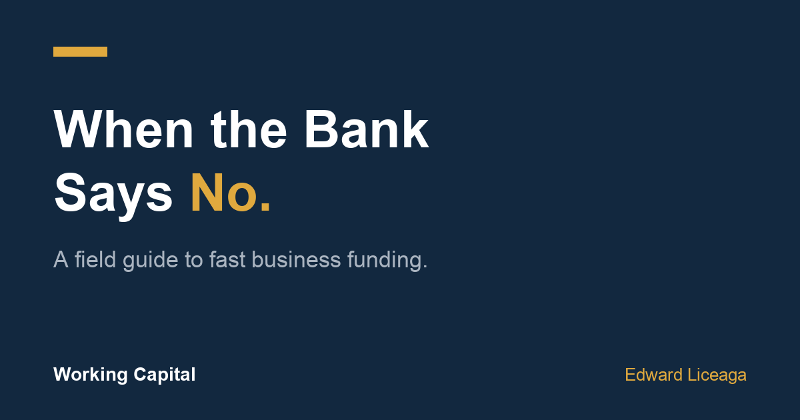

When the Bank Says No: A Field Guide to Fast Business Funding
What alternative funding actually is, what it costs, and the one test that tells you whether to take it.

Banks reject an estimated 80% of small-business loan applications. If you own a restaurant, a trucking company, a salon, or a construction firm, you've probably lived some version of this: strong revenue, a real plan, and a "no" that arrives six weeks after you needed the money.
This isn't a story about banks being villains. Bank underwriting is built for a specific borrower: two plus years of clean returns, strong personal credit, collateral, and the luxury of waiting 60 to 90 days. Most working businesses fail at least one of those tests at exactly the moment they need capital.
I run a funding desk at Creative Capital Solutions. This is the plain-English version of what I explain on the phone every week.
What alternative funding actually is
The product most owners end up looking at is a merchant cash advance, and the first thing to understand is that it isn't a loan.
A funder purchases a fixed amount of your future receivables at a discount. You get a lump sum now, typically around one month of your revenue. You deliver the purchased amount back through set payments, daily or weekly, on business days only, over terms that run from one month to eighteen.
Three practical differences from a loan follow from that structure:
The cost is a fixed fee, not interest. You know the total payback number before you sign, and it never grows. There's no compounding, no variable rate, no surprise.
Underwriting reads your bank statements, not your credit score. The file is your last three months of business deposits: volume, consistency, average daily balance. A 580 credit score with $60K a month in steady deposits is a fundable file. A 750 score with erratic deposits may not be.
Speed is the point. The application is one page. With statements in hand, decisions come back fast, and funding can land in as little as 24 hours on approved files. That's the trade you're making, and it's priced accordingly.
What it costs, honestly
More than a bank. It has to. The funder is taking risk the bank refused, without collateral, on a compressed timeline.
Anyone who tells you the sticker cost doesn't matter is selling too hard. It matters. But it's also the wrong number to stare at in isolation, which brings us to the only math that should drive the decision.
The ROI test
Expensive capital makes sense in exactly one situation: when the return on the use of funds beats the cost of the funds, inside the term.
Concrete version. A restaurant supplier offers $50,000 of inventory at 30% off, a $15,000 margin gain, but the window closes this week. If the fixed fee on a $50,000 advance is less than $15,000, the "expensive" money made you money. If a trucking company can put a $40,000 rig on the road generating freight revenue next Monday instead of next quarter, the weeks saved have a dollar value you can calculate.
Now the other side, because it's half the guide. If the money is going to cover ongoing losses, to make payroll with no change in the underlying business, or to a plan you can't articulate in one specific sentence? Don't take the advance. Fast capital amplifies whatever it's poured into. A business that's leaking loses faster with debt service on top.
That's the whole test: specific use, calculable return, return beats fee, inside the term. Pass it and speed is worth paying for. Fail it and no price is cheap enough.
What a fundable file looks like
If you're going to apply anywhere, know what underwriters look for. At minimum: three or more months in business and roughly $10,000 or more in monthly deposits. What strengthens a file: consistent deposit cadence, healthy average daily balances, few or no negative days. What weakens one: existing advances stacked on the account, tax liens without payment plans, deposit patterns that spike and vanish.
The paperwork is deliberately light: a one-page application and your last three months of business bank statements. No tax returns, no collateral, no 40-page package. Every file is different, so everything is subject to approval, and any funder who guarantees you an amount before seeing statements is guessing at best.
The part nobody markets: the renewal ladder
Your first advance is priced on paper, because the funder doesn't know you yet. Pay it as agreed and the second conversation is different: better rates, longer terms, larger amounts. Positive payment history is an asset you build, and unlike your credit score, you control it directly week by week.
The end state isn't daily payments forever. Used well, this product is a bridge back to being bankable, with a payment history that proves the business performs.
If your business does $10K+ a month in deposits and you have a specific, time-sensitive use for capital, you can see what you may qualify for here: https://ccapsolution.com/apply/?agent=edward.liceaga. One page, three bank statements, real numbers back fast. Subject to approval; terms vary by file.
I write weekly on business funding, building companies, and performance. Follow me here to get the next one.